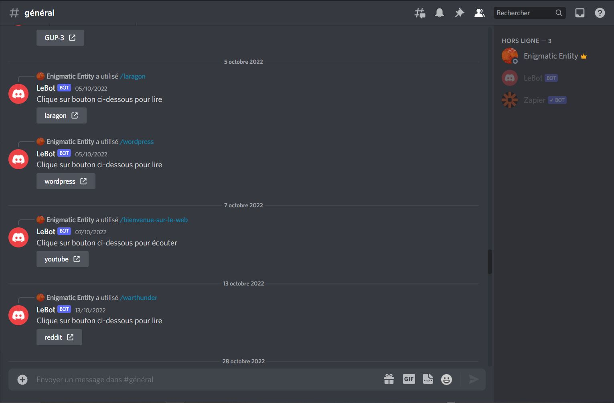
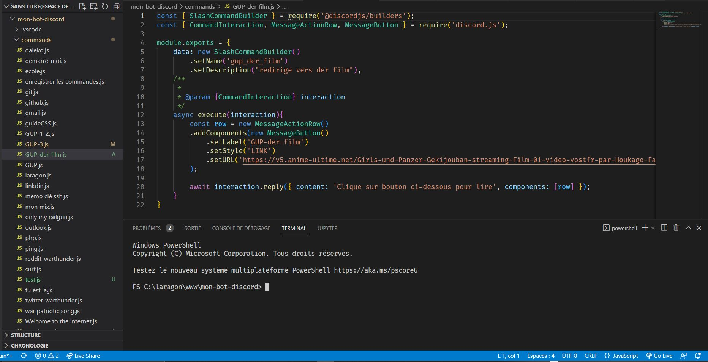

INFOS PROJET
Année: 2022
Catégorie: Perso
Sujet: Créer un bot discord
Logiciel: Visual studio code
Language: node js
Ce projet est un projet personnel que j'ai realisé durant les vacances d'été. J'ai decidé de coder de A à Z un bot discord pour découvrir le node js. Pour cela j'ai utilisé la bibliothèque discord, ce bot qui se trouve sur un serveur personnel me permet de centraliser tout ce dont j'ai besoin que cela soit pour le loisir ou le travail.

